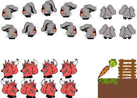
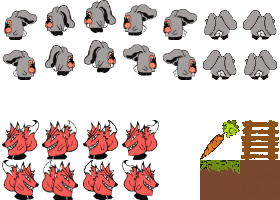

Carrot Mania

 

Description
Carrot Mania est la reprise d'un jeu d'aventure jouable sur la chaine de télévision américaine Playin'TV. On y un incarne un lapin qui doit manger toutes les carrotes d'un niveau pour passer au niveau suivant, tout en évitant les renards qui peuvent le manger et lui faire perdre ses vies. Afin de mener à bien ce projet, la méthodologie Scrum à été utilisée.
Pour le jeu, j'ai eu la tache de développer le jeu, en y intégrant les dessins et les niveaux, faits par mes collègues respectifs Janis Lobry et Faouzi M'madi.
Ce projet à été réalisé pour l'afterwork de Passerelle Numérique, formation que j'ai suivie d'octobre 2018 à mai 2019.
Organisation
Afin de concevoir le jeu ainsi que son site-web, nous avons écrit un Product Vision, document expliquant le but du jeu, ainsi que ses règles et ses spécificités.
Ensuite, nous nous sommes données les rôles en fonction des compétences et des envies de chacun et nous avons établi un Product Backlog, une liste priorisée des fonctionnalités à développer.
Enfin, nous avons développé le jeu ainsi que son site-web avec des mise en commun régulières, afin de constater l'avancement du travail, et de s'organiser pour la suite.
Technologies utilisées
- HTML
- CSS
- JS
Liens
Collaborateurs
-
Janis Lobry - Développeuse web / UX/UI Designer
-
Faouzi M'madi - Level Designer / UX/UI Designer
-
Myriam Achache - Product Owner